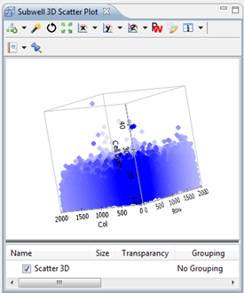

The 3D Scatter Plot is a graphical representation of points in 3 dimensions.
It is used when you need a representation of points by 3 features that you can select using the axis buttons. Fog is used to show that points are further away and deeper within the curve.

Here is another example showing a subwell data selection and a selection in a 3D scatterplot:

The chart-specific layers are:
| Cell Image Layer | This shows the image of the selected cells (if available). Some images may remain hidden because to optimize the visibility (least overlapping images). |
| Compound Layer | This shows an graphical representation (if available) of the compounds of the selected points. |